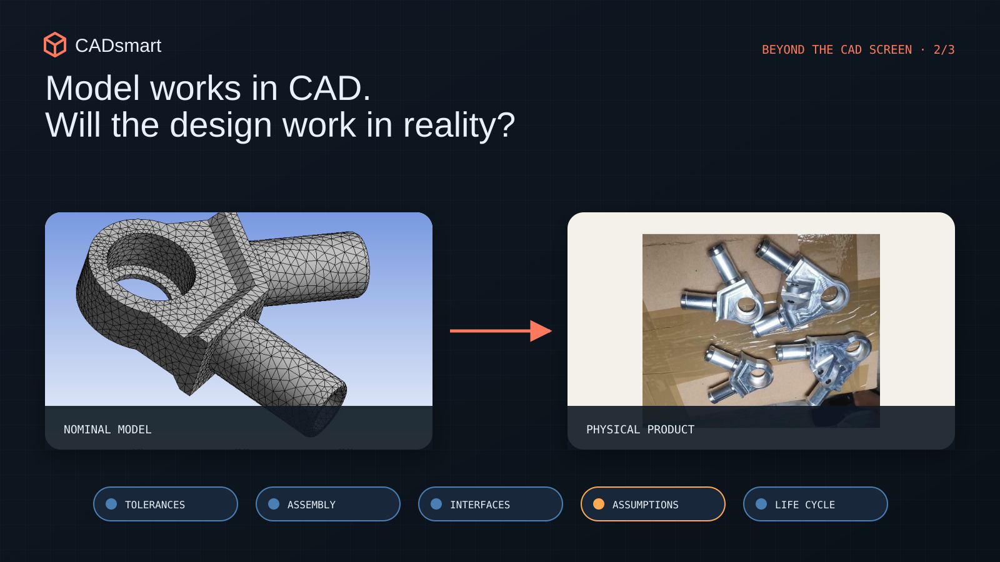
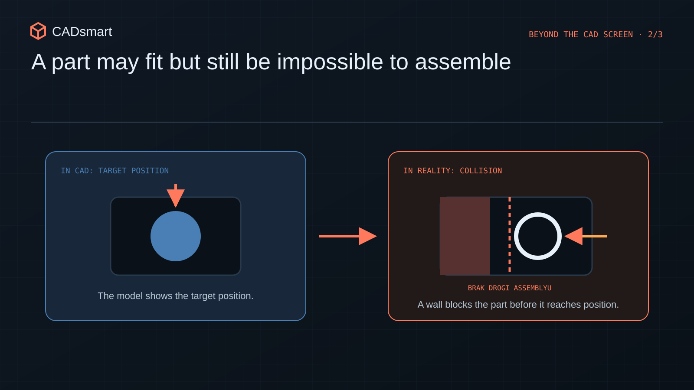
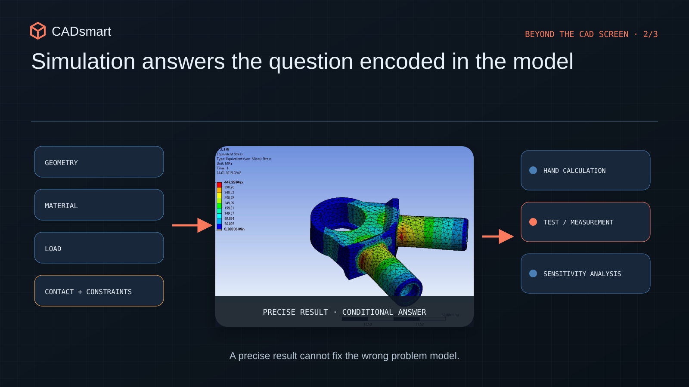
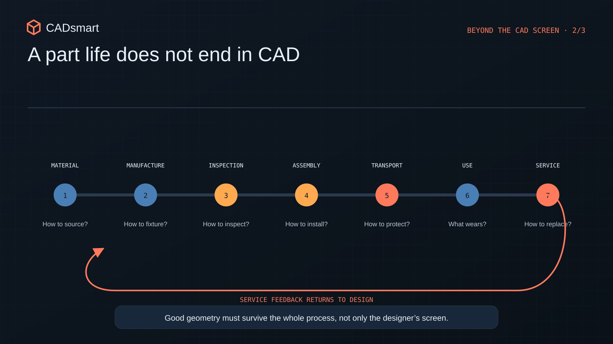

The model works in CAD. But will the design work in reality?
Five areas to check before prototyping: tolerances, assembly, interfaces, simulation and the complete product lifecycle.
From correct geometry to a working product
In CAD, the world works suspiciously perfectly. Every part has exactly the dimensions we gave it. A cable obediently follows its defined route, material does not bend until we allow it to, and a bolt can be placed even where neither a tool, a hand nor the assembler's remaining patience will fit. Everything fits on screen because the model knows only the rules we gave it. A real product adds its own: tolerances, stiffness, friction, assembly sequence and a person who has to put it all together with two hands. This is exactly where a correct CAD model can stop being a correct design.
Parts have variation. Cables have stiffness of their own. The operator has only two hands. Tools take up space, and the assembly sequence can block a solution that looked downright elegant on screen. A correct 3D model is therefore not proof of a good design. CAD is excellent at describing geometry, but it does not know the whole context. It does not know who will assemble the product, how the part will be made, what will bend, what will heat up, or which bolt will one day make a service technician swear.

I treat the following five areas as a review before ordering a prototype or releasing documentation. And no, these are not just “beginner mistakes”. They return in experienced teams too, especially when several technologies meet in one product and the deadline starts breathing down everyone's neck.
1. The nominal fits. Except the nominal hardly exists
In the model, a hole is exactly 10 mm, the spacing exactly 80 mm, and two surfaces meet perfectly. In manufacturing, every one of those dimensions moves within a range. Sometimes slightly up, sometimes slightly down. On its own, each one may still comply with the drawing. The problem begins when several dimensions form one stack. Suddenly every part is formally correct, but the assembly does not provide the required clearance, preload or position. Everyone did their job correctly, yet the product still does not work. The engineering version of “everyone is innocent, but there is still a body on the floor”.
A tolerance-stack analysis does not always require a huge spreadsheet and a statistical model. First, you simply need to understand the function:
- which surfaces actually locate the component;
- where clearance is required and where controlled contact is needed;
- which dimension closes the entire stack;
- which variations accumulate in the worst case;
- whether the drawing datum scheme reflects how the part will be assembled and inspected.
In electromechanical assemblies, sheet-metal parts, plastic housings or cable routing, one dimensional change can pass through several interfaces at once. A tolerance is not seasoning sprinkled over a finished drawing. It is part of the product architecture.
Be careful with tolerances tightened “for safety” as well. A more accurate dimension will not fix an unclear locating strategy. It can raise the price, reduce the supplier base and turn inspection into a separate project. More accurate does not always mean better. Sometimes it simply means more expensive.
2. CAD teleports parts. The assembler cannot
In an assembly, we click and the part appears exactly where it should be. In reality, someone has to pick it up, rotate it, insert it, hold it, connect it and then check whether it was done correctly. Putting parts together is not the same thing as defining an assembly process. The simplest review starts by walking through the real sequence of operations. If part A goes in first, can we still reach bolt B? Can the tool line up with the joint? Can the operator see the assembly point? Can the cable be routed without violating its bend radius or dismantling half the device?

Fasteners alone can provide plenty of entertainment. A CAD library will select the bolt diameter and length, but it will not automatically tell us:
- whether a wrench or screwdriver will fit;
- whether there is enough space to insert the bolt;
- whether the nut can fall inside the device;
- whether similar bolts can easily be confused;
- how many times the tool must be changed during assembly;
- whether the joint can later be dismantled for service.
When supervising prototype assembly and working with manufacturing teams, it becomes obvious that a designer and an assembler see the same detail very differently. The designer sees the function of the joint. The assembler sees hand movement, access, sequence and the risk of a mistake. A good design has to reconcile both worlds.
A very simple test helps: walk through the assembly step by step with the model, real tools and the planned sequence. Ideally, do it with someone who did not build the CAD assembly. They do not know our mental shortcuts, which is exactly why they will quickly find the places where the design works only because of knowledge stored in the designer's head.
3. A great part can ruin the whole product
A designer is usually responsible for a specific component or subsystem. That is natural, but it makes local optimisation an easy trap. The part becomes lighter, stiffer or easier to manufacture, while making cooling, assembly, cable routing or access to a neighbouring system worse. We won on our own screen. The whole product lost.
In devices combining sheet metal, castings, plastics, standard components and wiring, interfaces may matter more than individual parts. Variation, loads, assembly requirements and the responsibilities of several people all accumulate at those interfaces, exactly where it is easiest to assume that “someone else will check it”. A design should therefore be reviewed not only part by part, but also by following its flows:
- how forces travel through the product;
- where energy or media flow;
- how cables are routed and strain-relieved;
- where heat escapes;
- how the user interacts with the device;
- what must be opened, removed or disconnected during servicing.
The question “Is my part correct?” is therefore worth replacing with “What does my part do to the whole product?”. This matters especially in distributed teams, where every subsystem owner tends their own garden. Unfortunately, the product does not care about boundaries between departments.
4. Simulation can calculate everything, except that we are analysing the wrong case
Software will quickly detect an interference, calculate stress or generate a geometry variant. The result has three decimal places and a colourful map, so it looks very convincing. We instinctively begin to trust it. But every result answers only the model and assumptions we entered. A structural analysis will not warn us that the simulated mounting condition does not match reality. Interference detection will not find a cable that was never added to the assembly. Nor will it reveal a missing tool, seal or range of motion that we did not simulate. A component library cannot guarantee that the selected part will be available in the right variant and on time.

When working with structural analyses, prototypes and tests, I treat a digital result as one piece of evidence, not a stamp that closes the subject. A sensible sequence looks like this:
- record the input assumptions;
- check whether the model represents the real case;
- assess how the result changes with the assumptions;
- compare it with a simple calculation, experience or a test;
- record what the analysis does not cover.
This is not about distrusting tools. The software does exactly what we ask it to do. The problem is that it can give a very precise answer to a badly framed question. The solver is responsible for the numbers. The designer is still responsible for whether the whole case makes sense.
5. A project does not end at the “release” button
A part may work perfectly in a prototype and then cause problems in manufacturing, inspection, transport or service. A product's life is much longer than the moment when it performs its main function.

A basic assembly usually hides many very down-to-earth questions:
- how the part will be held during machining and inspection;
- which dimensions can genuinely be measured;
- how the product will be lifted, protected and packaged;
- what vibration, temperature and repeated assembly will do to it;
- which parts will wear out and how they will be replaced;
- whether service needs a special tool or calibration;
- how successive revisions will be distinguished.
On a sports-facility project for a client in the United States, my work did not end with the structure itself. The scope also covered cost, optimisation, packaging and manufacturing coordination. It demonstrates a broader principle well: the technical solution is only one part of delivering and using the product. If that process does not work, beautiful geometry will not help much.
Five minutes before releasing the documentation
Before ordering a prototype or clicking “release”, it is worth checking once more:
- function at the extreme tolerance combinations;
- the real assembly sequence with actual tools;
- interfaces and the part's effect on the rest of the product;
- record analysis assumptions and how they will be confirmed;
- follow the part through manufacturing, inspection, transport and service.
CAD is an excellent tool for describing a solution. But it cannot replace conversations with manufacturing, assembly, testing or the user. A designer's greatest value begins precisely where the software's automatic answer ends.
What problem did you discover only during prototyping or assembly, even though everything looked perfect on screen? I would be glad to compare experiences in the comments.
Review your project
Would you like to check whether the model describes a product that can actually be manufactured, assembled and used?
Open 9 review questions
- Has the worst still-compliant tolerance stack been calculated for every critical fit, and have function and assembly been verified at those limits?
- Do the drawing datums reproduce how the part is located during manufacturing, assembly and inspection, and does every tightened tolerance follow from function?
- Can someone unfamiliar with the model assemble the product in the defined sequence, using real tools, without hidden adjustments or opportunities to confuse parts?
- After assembly, is the required access retained for inspection, adjustment, diagnostics and replacement of service items?
- Does every critical interface have an owner, requirements on both sides and verified paths for force, heat, energy, media and cables?
- Has the full range of motion been checked with real cables, seals, tools and the space required by the operator?
- Are the assumptions, boundary conditions and sensitivity of every key simulation recorded, and is there an independent method for validating its result?
- Can the part be manufactured, located, measured, marked and packaged unambiguously using the supplier's actual capabilities?
- Which component is most likely to wear or lose adjustment first, and can it be diagnosed and replaced within the target time?
Would you like to save these questions for later?